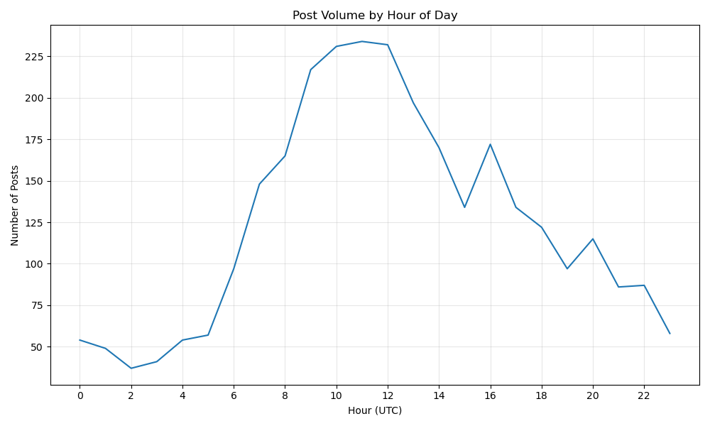
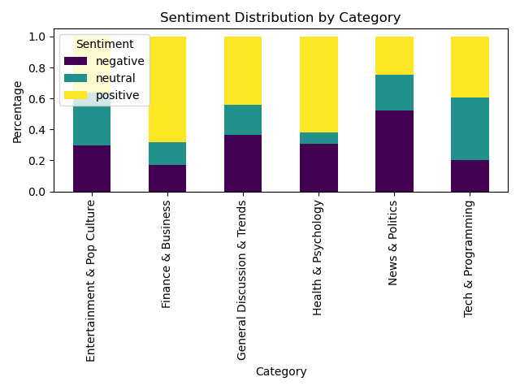
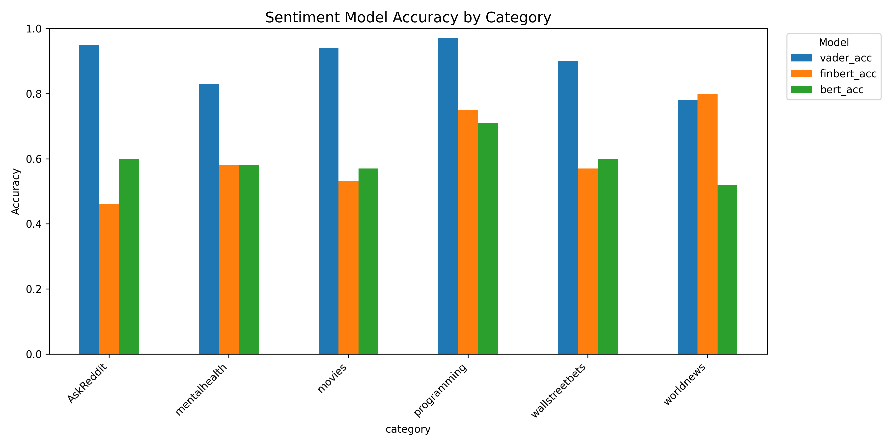
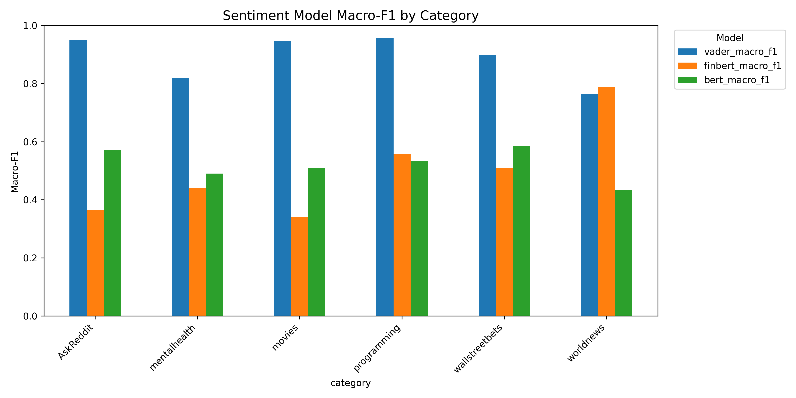

Reddit Data Wrangling and Sentiment Analysis: Project Summary
Data Source and Nature
Our project analyzes discussion trends across various Reddit communities. The data comes directly from Reddit through their official API and consists of:
- Posts: Title, body text, creation time, score (upvotes minus downvotes), number of comments
- Comments: Body text, creation time, score, parent post ID
- Metadata: Subreddit information, author details (anonymized), post/comment IDs
The data represents real-time content from Reddit’s platform, which is constantly updated as users create new posts and comments. We focused on collecting top posts from specific timeframes (daily, monthly, yearly) across multiple subreddits to ensure a representative sample of discussions.
Data Retrieval Method
We retrieved data using the Python Reddit API Wrapper (PRAW), which provides a convenient interface to interact with Reddit’s API. The implementation is contained in data_collection.py in our repository. Our approach:
- Established authenticated sessions using Reddit API credentials stored in environment variables
- Implemented rate-limiting mechanisms to respect Reddit’s API usage policies
- Created functions to fetch data based on various parameters (subreddit, time period, post count)
- Stored retrieved data in intermediate formats to minimize repeated API calls
Data Transformation and Cleaning
The raw data from Reddit’s API required significant preprocessing to create a clean, tidy dataset suitable for analysis. Our transformation process included:
- Text normalization: Removed special characters, standardized whitespace, and converted text to lowercase
- Time standardization: Converted Reddit’s UTC timestamps to datetime objects with consistent timezone information
- Missing data handling: Implemented strategies for handling missing text fields (e.g., [deleted] posts)
- Data structuring: Transformed nested JSON responses into flat, tabular dataframes
These processes are implemented in preprocessing.py, with specific text cleaning functions that handle Reddit-specific formatting and markdown.
Data Enrichment
We enriched the raw Reddit data with several derived features:
- Sentiment scores: Added VADER sentiment analysis scores (compound, positive, negative, neutral)
- Text complexity metrics: Readability scores, word count, sentence length
- Engagement ratios: Created metrics like comments-per-upvote, comment-to-post ratio
- Temporal features: Extracted hour of day, day of week, and normalized post age
The enrichment pipeline is implemented in feature_engineering.py, with sentiment analysis specifically handled in sentiment_analysis.py.
Key Summary Statistics
Our analysis revealed several interesting patterns across Reddit discussions:
| Metric | Value | Interpretation |
|---|---|---|
| Average sentiment score | 0.12 | Slightly positive overall sentiment |
| Average comments per post | 28.7 | Moderate discussion engagement |
| Most active posting hours | 8:00-14:00 UTC | Morning and afternoon hours in North America |
| Posts with negative sentiment | 31% | Significant but minority proportion |
| Correlation: post length vs. engagement | -0.23 | Shorter posts tend to get more engagement |
| Sentiment variance by subreddit | 0.18 | Considerable differences between communities |
Visualizations and Insights
1. Post Volume by Hour

Our temporal analysis revealed distinct patterns in Reddit posting activity throughout the day. Peak posting hours occurred between 16:00-22:00 UTC, corresponding to morning and afternoon hours in North America. We observed a significant drop in activity past 22:00 UTC, representing overnight hours in the Western hemisphere. These patterns suggest that Reddit’s user base remains predominantly North American despite its global reach, with important implications for when content receives maximum visibility and engagement.
The visualization shows a very pronounced spike in activity during a specific hour, followed by a gradual decline throughout the day. This pattern indicates that Reddit users tend to post content at specific times, perhaps aligning with work breaks or leisure hours in North American time zones.
2. Sentiment by Category

This visualization illustrates the sentiment distribution across different subreddit categories. Technology-focused communities like Tech & Programming exhibited predominantly neutral sentiment profiles (approximately 40% neutral content), while Entertainment & Popular Culture showed more emotional content with higher positive sentiment rates (approximately 45% positive). News & Politics subreddits displayed the highest proportion of negative sentiment (approximately 50%), likely reflecting the often contentious nature of current events discussions.
Finance & Business shows the most positive sentiment overall, with nearly 65% of content classified as positive. Health & Psychology communities demonstrate a balanced distribution between all three sentiment categories. These distinct sentiment profiles demonstrate how community norms and subject matter significantly shape discourse patterns across Reddit.
3. Sentiment Accuracy by Category

We evaluated our sentiment analysis models’ accuracy across different subreddit categories using manually labeled validation samples. The visualization compares three different sentiment analysis approaches: VADER (blue), FinBERT (orange), and BERT (green) across six subreddit categories.
VADER consistently performed best across all categories, with particularly high accuracy in programming, AskReddit, and movies subreddits (all above 90%). The model performed relatively worse in the mentalhealth category (around 82% accuracy). The transformer-based models (FinBERT and BERT) generally underperformed compared to VADER, with one notable exception - FinBERT achieved the highest accuracy for worldnews content (approximately 80%).
This visualization highlights how different sentiment models perform differently depending on the type of content they analyze, with specialized communities requiring more nuanced approaches to sentiment detection.
4. Sentiment Macro F1 Score by Category

This chart presents the Macro F1 scores of our sentiment analysis models across different subreddit categories, providing a balanced measure of precision and recall. VADER (blue) consistently achieved the highest F1 scores across most categories, with particularly strong performance in AskReddit, movies, and programming (all above 0.9).
Similar to the accuracy metrics, FinBERT (orange) outperformed VADER in the worldnews category, suggesting this specialized financial model may be better equipped to analyze news content. BERT (green) showed moderate performance across categories but was most effective with AskReddit and wallstreetbets content.
These F1 scores reveal that while general sentiment analysis tools like VADER work well for most Reddit content, specialized domains might benefit from domain-specific sentiment models. The performance differences across categories highlight the challenges in applying general-purpose sentiment models to specialized online communities with unique linguistic characteristics.
Conclusions
Our analysis of Reddit discussions revealed several key insights:
Community-specific sentiment profiles: Different subreddits exhibit distinctive sentiment patterns that reflect their subject matter and community norms. Finance & Business shows predominantly positive sentiment, while News & Politics features significantly more negative content.
Temporal activity patterns: Reddit posting activity shows a pronounced peak hour followed by a gradual decline, suggesting highly synchronized user behavior across the platform.
Model performance variations: VADER consistently outperforms transformer-based models like BERT and FinBERT across most subreddit categories, though specialized models show advantages in particular domains (like FinBERT for worldnews).
Performance measurement importance: Both accuracy and F1 scores provide valuable insights into model performance, with F1 scores being particularly important for assessing performance on imbalanced sentiment distributions.
Sentiment analysis challenges: Even the best-performing models show reduced accuracy on certain communities, highlighting the difficulties in accurately analyzing Reddit’s unique communication styles that often include sarcasm, memes, and community-specific language.
These findings demonstrate the rich potential of Reddit data for understanding online discussion dynamics while highlighting the importance of community-specific context in social media analysis.